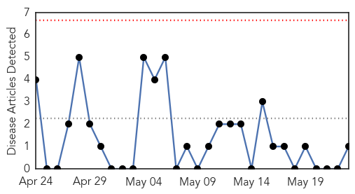
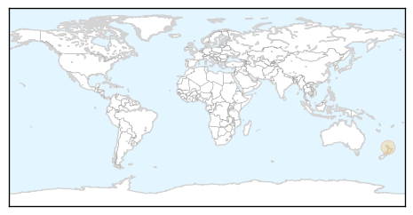
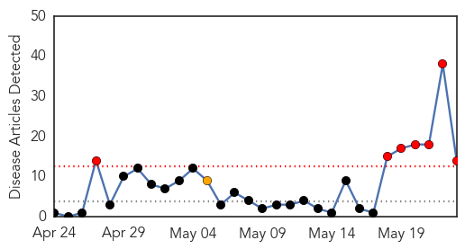
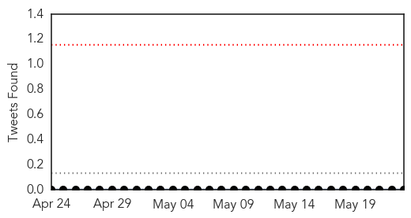
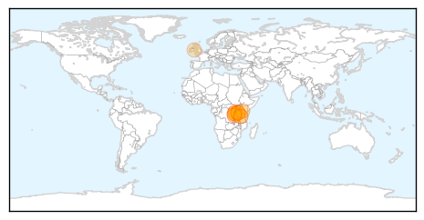
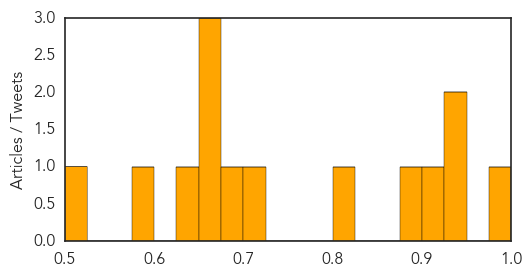

Pertussis
30-Day Web Trend
0 alerts, 0 warnings

30-Day Twitter Trend
0 alerts, 0 warnings

Article Locations
Article Confidences

Top Articles:
Top Tweets:
-
No tweets found for May 23, 2015
Cholera
30-Day Web Trend
7 alerts, 1 warnings

30-Day Twitter Trend
0 alerts, 0 warnings

Article Locations
Article Confidences
Top Articles:
- 0.998
- The most from the coast
- 0.950
- Cholera epidemic hits 3,000 Burundi refugees in Tanzania – UN - Panorama
- 0.932
- Cholera infects 3,000 Burundian refugees, UN calls for help
- 0.919
- Cholera strikes 3,000 Burundi refugees in Tanzania: UN
- 0.893
- Kenya : 300-400 new cholera cases per day among Burundians in Tanzania: UN
- 0.805
- Gallery: Top Photos, May 23, 2015
- 0.716
- 300 to 400 new cholera cases per day among Burundians in Tanzania
- 0.676
- Joyful Burundi refugees leave disease-stricken camp
- 0.672
- Red Cross responds to growing need for regional assistance following Burundi pre-election violence - Burundi
- 0.670
- Red Cross responds to growing need for regional assistance following Burundi pre-election violence
- 0.658
- Joyful Burundi refugees leave disease-stricken camp
- 0.648
- Joyful Burundi refugees leave disease-stricken camp
- 0.588
- Burundi: Red Cross responds to growing need for regional assistance following Burundi pre-election violence
- 0.525
- Cholera outbreak hits 3,000 Burundi refugees ? UN -
Top Tweets:
-
No tweets found for May 23, 2015